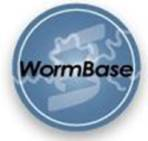

 The WS126 release of WormBase last month featured a complete genome with no gaps remaining in the genome sequence.
WormBook is a new online review of C. elegans biology. This open-access project will feature original reviews of C. elegans-related articles written by leading C. elegans biologists and will fill an existing information gap for C. elegans researchers, the general scientific community and educators as well as providing a narrative to WormBase. WormBook will also include 'WormMethods', a repository for experimental methods and techniques. WormBook will be extensively hyperlinked into and out of WormBase. The initial version of WormBook will be available online by May 2005. Martin Chalfie is Editor-in-Chief, Victor Ambros is Editor of WormMethods and Lisa Girard is Editor and will be the main contact person.
The WS126 release of WormBase last month introduced gene identifiers for every gene, e.g., WBGene00000001 for aap-1. Such stable gene identifiers facilitate the easy tracking of the 'history' of a gene as the WBGene identifier will be retained in the database even when the corresponding gene prediction is removed due to a gene split, merger or obsoletion. Though this process involved major changes in the data model and extensive testing of the performance of the database, this does not change the way in which searching and querying for genes is done.
The following features and displays have been added, any feedback as to how these could be improved is welcome.
1. A site map provides a list of displays and searches along with a brief description: http://www.wormbase.org/db/misc/site_map
2. The 'Batch Genes' Query page (http://www.wormbase.org/db/searches/batch_genes) retrieves batch information for a given set of genes, proteins or transcripts. This query has been improved to increase speed of retrieval, and now can retrieve several new data categories like concise description, subcellular localization, Gene Ontology terms, strains, transgene, etc. Retrieved information can be saved to spread-sheets or in tab-delimited text form.
3. New displays have been added for:
--Microarray Data: http://www.wormbase.org/db/microarray/results
--Life Stage Summary: http://www.wormbase.org/db/misc/life_stage
--Gene Regulation: http://www.wormbase.org/db/gene/regulation
--Information Update for the lineage of C. elegans scientists: http://www.wormbase.org/db/misc/person
4. A 'Glossary' that lists terms and their definitions as used in WormBase:
http://www.wormbase.org/db/misc/glossary
Affymetrix GeneChip and Washington University GSC microarray probe set information is now available in WormBase. The data can be accessed from the ‘Reagents’ section of the Gene Summary page and on the Genome Browser.
Eukaryotic orthologous groups from NCBI (about 5,924 in number) have been updated and added to WormBase. These include universal groups (KOGs) found in all metazoa or all eukaryotes, two-species orthology groups (TWOGS) that are nevertheless ancient (e.g., orthologies found only between worm and fly, or worm and human) and lineage-specific expansions of genes peculiar to C. elegans (LSEs). These data are visible on the gene summary page under the section 'NCBI KOGs'.
Textpresso (http://www.textpresso.org) has added 610 new full-text papers and 958 new abstracts bringing the total number of papers and abstracts to 4,420 and 17,700, respectively.
We would like to remind our users that WormBase offers version freezes. Every tenth release is available, so that bioinformaticians can refer to and work with a particular version of the C. elegans genome (e.g., http://ws120.wormbase.org).